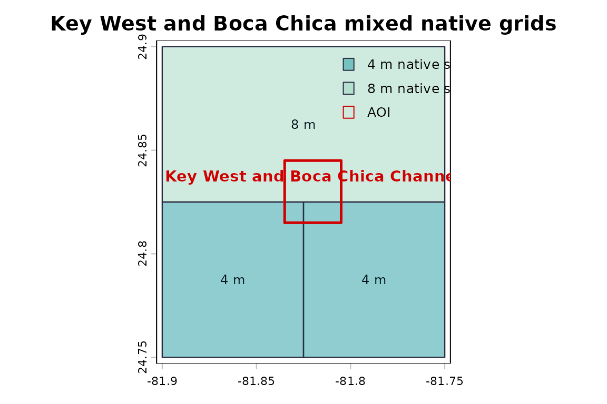
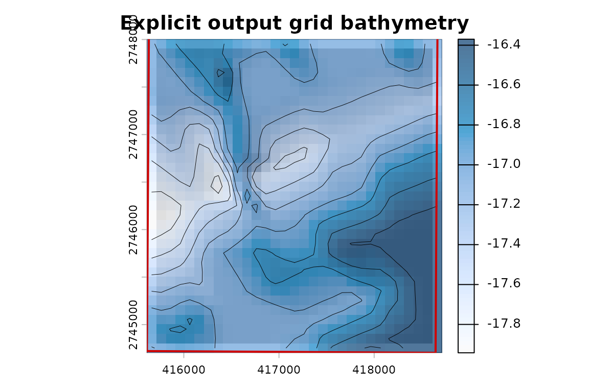

This page uses real NOAA BlueTopo source tiles when rendered for the public pkgdown site. This example uses actual NOAA BlueTopo source tiles downloaded from the public NOAA National Bathymetric Source bucket during the pkgdown build.
New York Harbor is the primary public AOI for the examples, but its current small plan is a compatible 4 m grid. This page uses a documented secondary real AOI near Key West and Boca Chica Channel because it currently intersects real 4 m and 8 m NOAA BlueTopo source grids and therefore demonstrates mixed native grid behavior without synthetic rasters.
BlueTopo is not for navigation. No vertical-datum conversion is
performed. Mixed native grids are preserved unless the user asks for a
single output grid. combine = "single" needs an explicit
output grid when native grids are incompatible. Resampled uncertainty
values are not original source cells, and contributor resampling must be
nearest-neighbor.
Native Mixed-Grid Extraction
native <- bluertopo(
real_aoi,
resolution = "native",
coverage = "fill",
combine = "auto",
details = TRUE,
progress = FALSE,
quiet = TRUE
)
if (!inherits(native$data, "SpatRasterCollection")) {
stop("The documented real AOI no longer produces mixed native grids.", call. = FALSE)
}
native_table <- bt_raster_summary(native$data)
native_table$output_object_class <- paste(class(native$data), collapse = ", ")
native_table <- native_table[c(
"output_object_class",
"group_name",
"crs",
"resolution",
"source_count",
"layer_names"
)]
bt_display_table(native_table)| output_object_class | group_name | crs | resolution | source_count | layer_names |
|---|---|---|---|---|---|
| SpatRasterCollection | grid_01_epsg26917_4x4 | EPSG:26917 | 4 x 4 | 1 | elevation |
| SpatRasterCollection | grid_02_epsg26917_8x8 | EPSG:26917 | 8 x 8 | 1 | elevation |
Native Grid Footprints
bt_plot_locator_map(
native$tiles,
real_aoi,
place_label = real$place,
main = "Key West and Boca Chica mixed native grids"
)
Actual NOAA BlueTopo source tiles: native grid footprints selected for mixed-grid extraction.
Explicit Single Output Grid
single <- suppressWarnings(bluertopo(
real_aoi,
layers = "elevation",
resolution = "native",
coverage = "fill",
output_crs = "EPSG:26917",
output_resolution = 100,
combine = "single",
details = TRUE,
progress = FALSE,
quiet = TRUE
))
single_raster <- single$data
single_table <- data.frame(
output_object_class = paste(class(single_raster), collapse = ", "),
crs = paste0("EPSG:", terra::crs(single_raster, describe = TRUE)$code),
resolution = paste(round(terra::res(single_raster), 3), collapse = " x "),
extent = paste(round(as.vector(terra::ext(single_raster)), 1), collapse = ", "),
resampled_flag = attr(single_raster, "bluertopo_resampled") %in% TRUE,
stringsAsFactors = FALSE
)
bt_display_table(single_table)| output_object_class | crs | resolution | extent | resampled_flag |
|---|---|---|---|---|
| SpatRaster | EPSG:26917 | 100 x 100 | 415613, 418713, 2744703.3, 2748003.3 | TRUE |
bt_plot_bathy_map(single$data, real_aoi, main = "Explicit output grid bathymetry")
Actual NOAA BlueTopo source data: hillshaded elevation resampled onto an explicit output grid.
The explicit grid is useful for workflows that require one raster, but it is a resampling operation. Native source-resolution selection remains separate from output-grid creation.